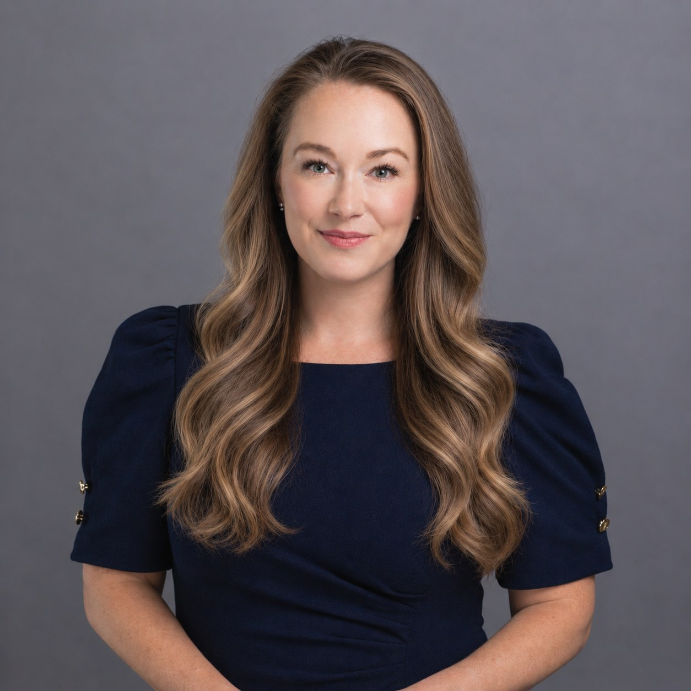
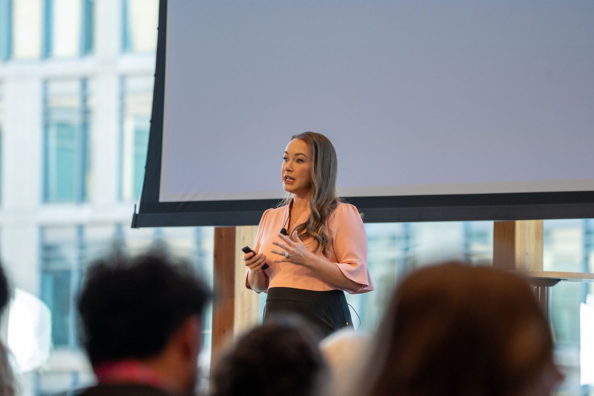
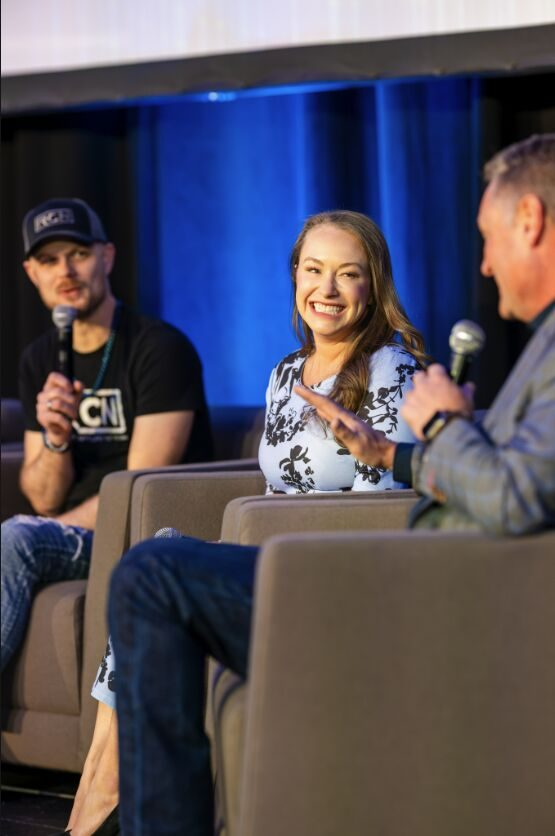
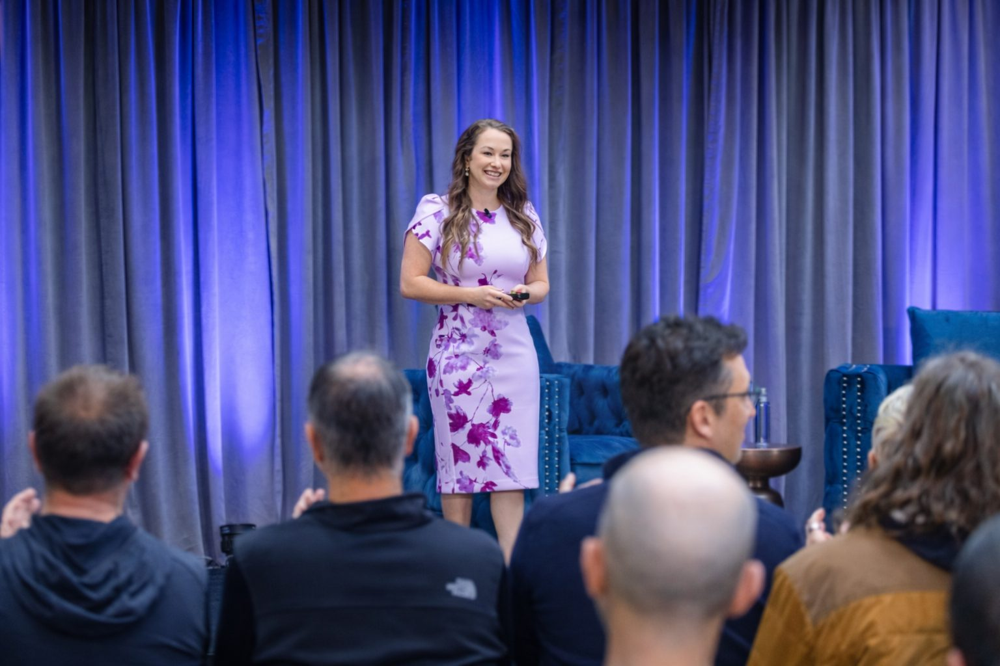
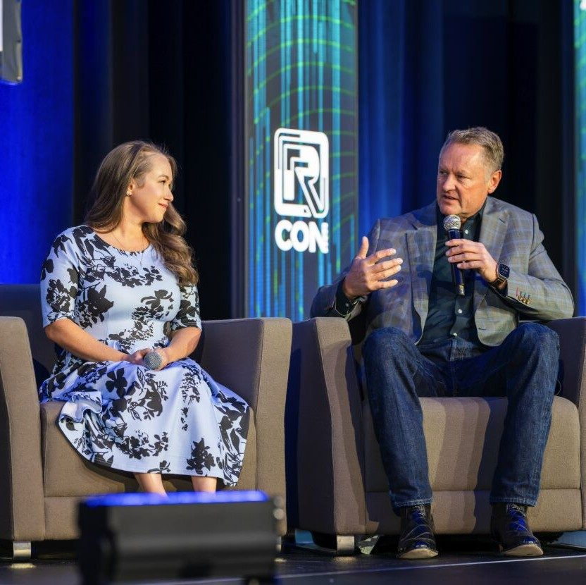

Brittany Giudici
Director of Communications, Microsoft SecurityKeynote speaker. Founder of The Giudici Group and Treasure Valley Women in Tech.
Meet Brittany
My career in technology started right out of college, when Apple hired me to do marketing and communications for the iPhone 3GS on its Worldwide Sales team in Cupertino. From there, my work took me all over the world with tech companies focused on online retail, human and AI-generated language translation, and multinational enterprise software.
Today I'm Director of Communications for Microsoft Security. I've owned and driven communications for its global cybersecurity division and for Charlie Bell, Microsoft's executive vice president, a technology luminary, and a cofounder of Amazon Web Services. I've led communications through some of the most high-profile moments in Microsoft's recent security history: the Storm-0558 nation-state attack and the Cyber Safety Review Board report that followed, the Midnight Blizzard breach, and the launch of the Secure Future Initiative, Microsoft's largest cybersecurity engineering effort to date. I've also led executive and employee communications for Microsoft Security through multiple geopolitical conflicts, including the Russia-Ukraine and Israel-Hamas wars.
I founded Treasure Valley Women in Tech in 2023 because I believe southwest Idaho is full of women who bring unique and valued gifts to the technology industry and the communities they serve. Today the nonprofit has grown to more than 800 members.
I'm a regular keynote speaker on leadership, organizational transformation, crisis communications, and purpose-driven careers. I'm also the founder and president of The Giudici Group, a communications consultancy I launched in 2016 that has served more than 250 clients across crisis management, PR and marketing, and corporate communications.
I live in the Treasure Valley with my husband and our two young daughters.
The words a leader chooses in a hard moment are the ones people remember.I help you choose them.
Speaking
I speak on leadership, organizational transformation, crisis communications, and purpose-driven careers, drawing on 18 years of advising executives at Apple, Sage, and Microsoft. My keynotes, panels, and fireside conversations are designed for founders, executives, technologists, and emerging leaders, and each one is developed in close partnership with event organizers to reflect the audience, the occasion, and the outcomes they want to achieve. I bring a practitioner's perspective, grounded in firsthand experience leading communications through nation-state cyberattacks, geopolitical conflict, and large-scale organizational change.




Leadership
What it takes to lead with clarity and earn trust.
Organizational transformation
Bringing people with you through big change.
Crisis communications
Lessons from leading through nation-state attacks and global conflict.
Purpose-driven careers
Building a career, and a life, around what matters to you.
The Giudici Group
The Giudici Group is a boutique communications consulting and advisory firm.
Since 2016, we have advised 250+ clients on crisis management, PR, and marketing, along with internal, external, and corporate communications, developing and operationalizing plans from strategy through execution.
Clients include YouTube creators, leading technology executives, global influencers, megachurch leadership, and political figures.
Executive communications
The center of my work. For 18 years I've been the editor-in-chief for executive voice, helping leaders sound like themselves, at their best, in every room that matters.
- Executive voice and narrative architecture: what a leader stands for and how they say it
- Keynotes and speechwriting for flagship events, conferences, and customer moments, from talk track and deck to on-site support and follow-up
- Technical storytelling that turns complex AI, cybersecurity, and software topics into clear, high-impact stories
- Executive readiness for media interviews, customer briefings, internal forums, and confidential leadership briefings
- Preparation for engagements with senior government officials, geopolitical leaders, and heads of state
- Internal moments: all-hands, leadership memos, organizational announcements, and change communications
- Thought leadership: op-eds, bylines, blogs, and executive social content
- Executive communications calendars, editorial strategy, and planning rhythms that keep a leader visible and consistent
- Counsel through organizational transitions, leadership changes, and sensitive issues
- Building executive communications functions from zero into repeatable, programmatic systems
Crisis management
Steady counsel before, during, and after the moments that test a reputation.
- Risk assessment, scenario planning, and crisis playbooks before anything happens
- Rapid situation assessment and a clear response plan in the first hours
- Holding statements, media responses, and talking points
- Spokesperson preparation and media training for executives
- Employee, customer, partner, and stakeholder communications
- Ongoing counsel through resolution, then reputation recovery and lessons learned
PR and marketing
Stories that earn attention and hold it.
- Communications strategy and messaging frameworks
- Media relations, pitching, and interview preparation
- Launch planning for products, companies, and initiatives
- Personal brand building for creators and public figures
Internal and corporate communications
Keeping people informed and aligned through change.
- Change communications for reorganizations, mergers, and acquisitions
- Employee communications plans and channel strategy
- Corporate announcements and stakeholder updates
- Plans built from strategy through execution
Treasure Valley Women in Tech
I founded Treasure Valley Women in Tech in 2023 as a nonprofit for women working and studying in tech across southwest Idaho, with events, panels, and a partnership with Boise State University.
Visit Treasure Valley Women in TechMedia
Features, interviews, and appearances.
Built Different panel at R-CON 2026
See the post Greet Eagle MagazineFeatured in Greet Eagle Magazine
Read the feature Matthew Byrd PodcastGuest on the Matthew Byrd Podcast
Watch the episode Bridgewater State UniversityHow a Bridgewater State connection helped launch Brittany Giudici's career in tech
Read the story Idaho Technology CouncilWiTECH Summit launches with impact: Tech Powered. Women Led.
Read the story WiTECH Summit 2026Purpose Driven: Community, Clarity, and the Choice to Build Where You Are
See the programContact
For speaking, consulting, or media requests, message me on LinkedIn. I respond to speaking inquiries within two business days.